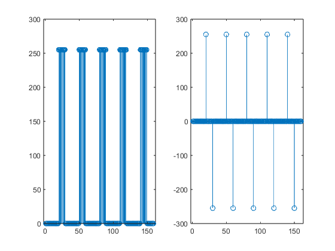
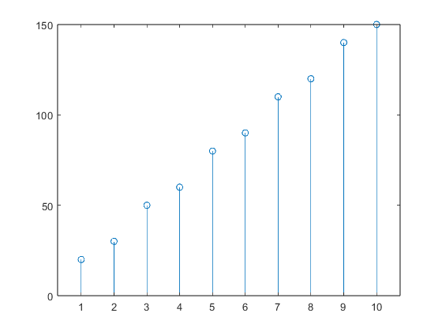

Contents
(a)
xx = 255*(rem(1:159,30)>19);
bb = [1, -1];
y = conv(bb, xx); % used conv instead of firfilt, but it's the same thing
figure;
subplot(1,2,1);
stem(xx);
subplot(1,2,2);
stem(y);

(b)
The output y(n) reflects the abrupt changes/spikes in x(n). because y(n)=x(n)-x(n-1), when x suddenly jumps from 0 to 100, for example, y(n) has the spike value at n. In the other way, if x goes from 0 to 1, y(n) is just 1. In the same way, even if x goes from 100 to 101, y(n) is just 1. In this way, y(n) reflects abrupt big changes and spikes in x(n), which is why y(n) can be used as an edge detector.
(c)
disp('length of y(n):'); disp(length(y)); disp('length of x(n):'); disp(length(xx)); % y(n) is 1 more longer than x(n). This is because y(n) is found by % convolution of x(n) with [1,-1], which is length 2. Based on the rules of % convolution, when y=x*h, length(y)=length(x)+length(h)-1. Here, the is % length(x)+2-1. % Intuitively, this is because convolution is taken % by the edge of x(n) with edge of [1,-1] and goes by 1 by 1. At n'th % point, [1,-1] overlaps with the last two elements of x(n). Convolution % further coontinues its process for n+1'th term, where the edge of [1,-1] % and the last x(n) term overlaps.
length of y(n): 160 length of x(n): 159
(d)
t = 200; d = abs(y) >= t;
(e)
signal = find(d); figure; stem(signal);
